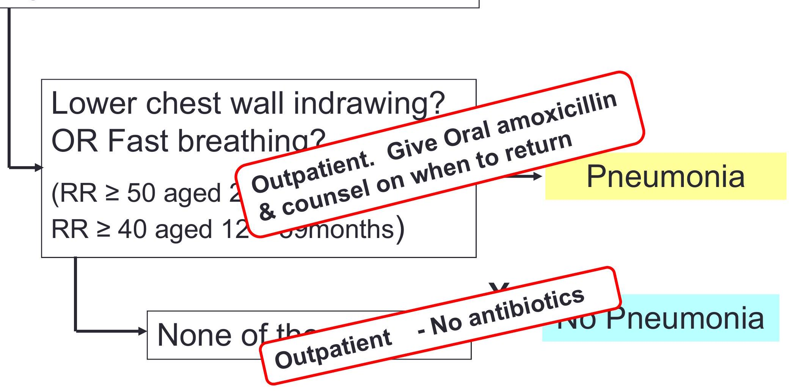
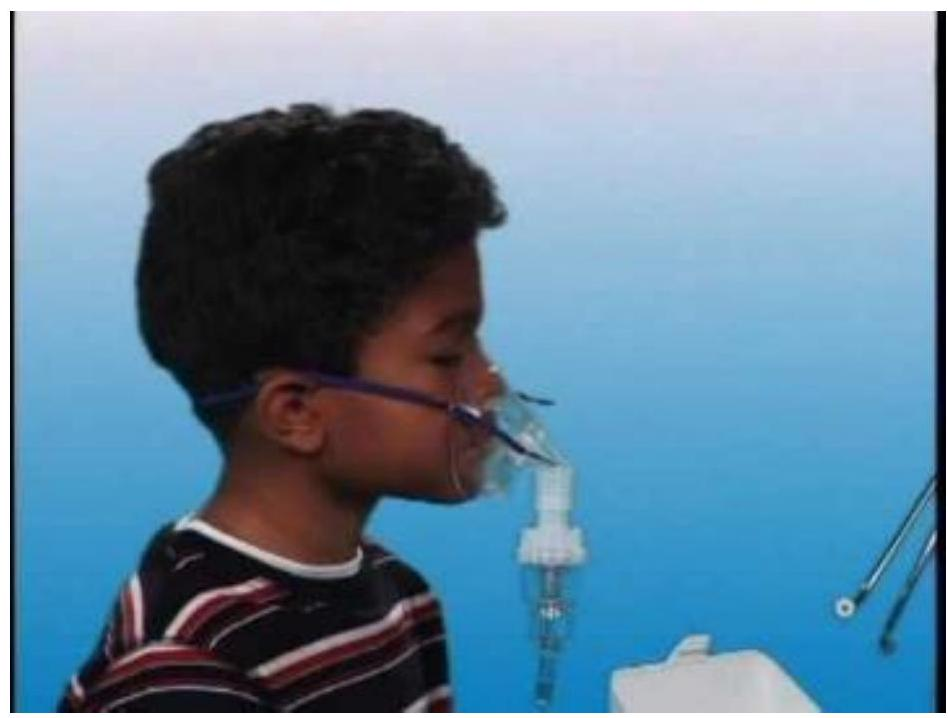
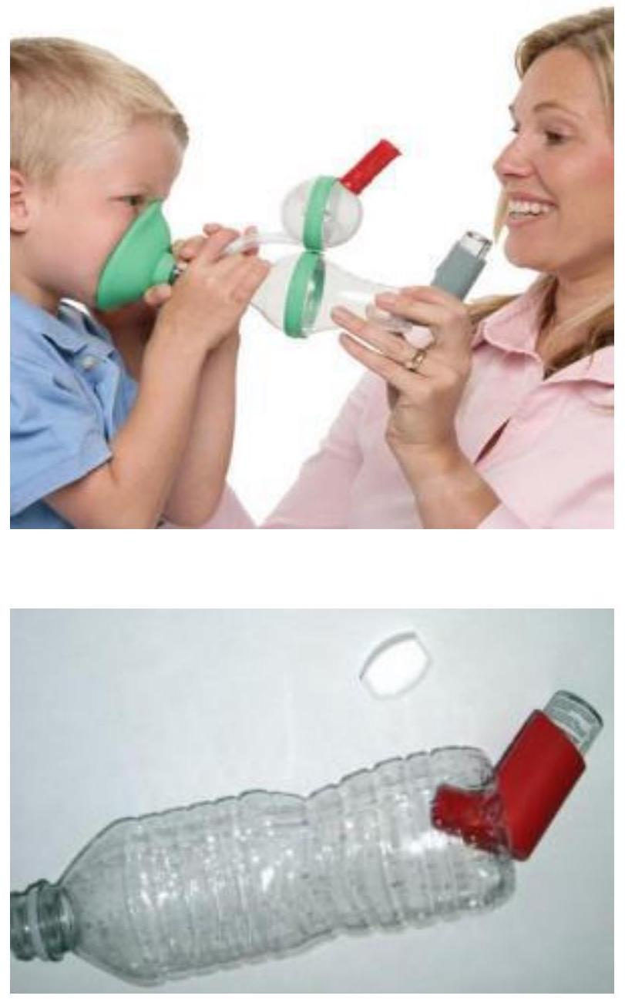
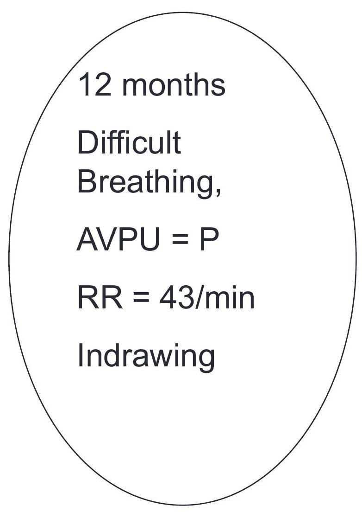
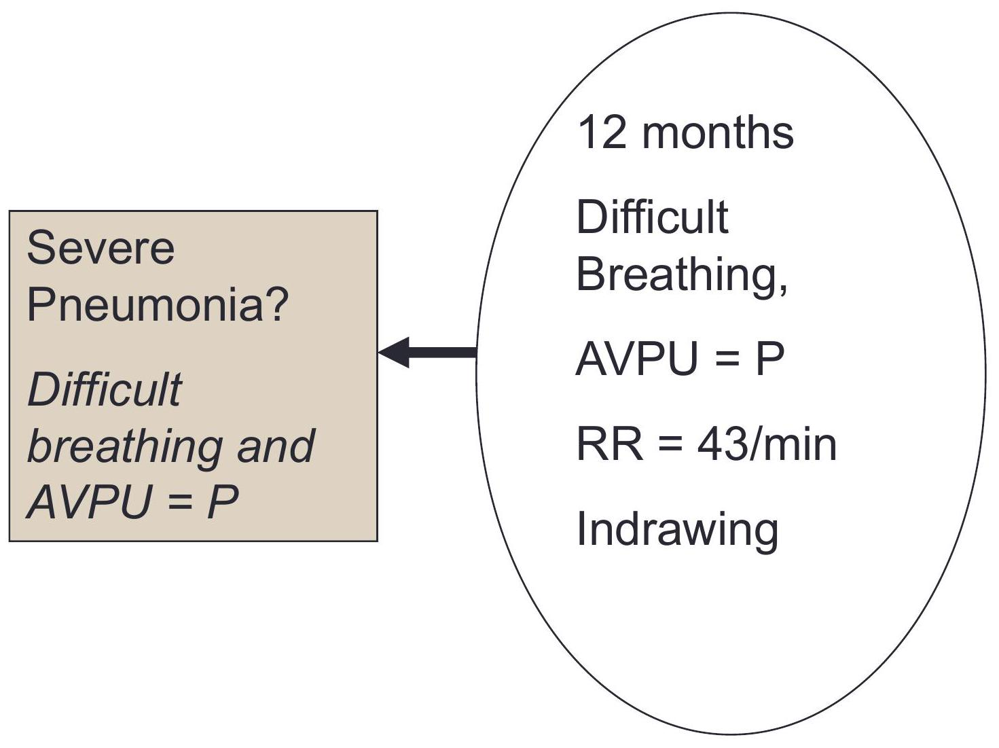
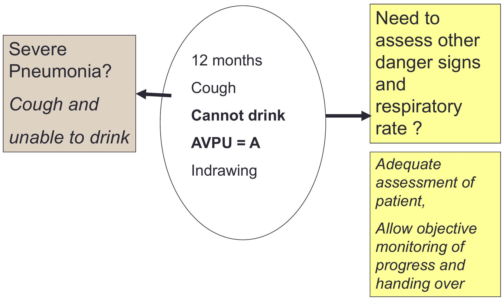
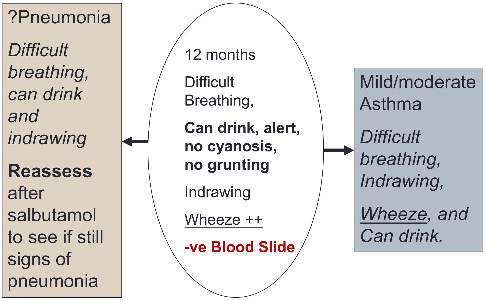
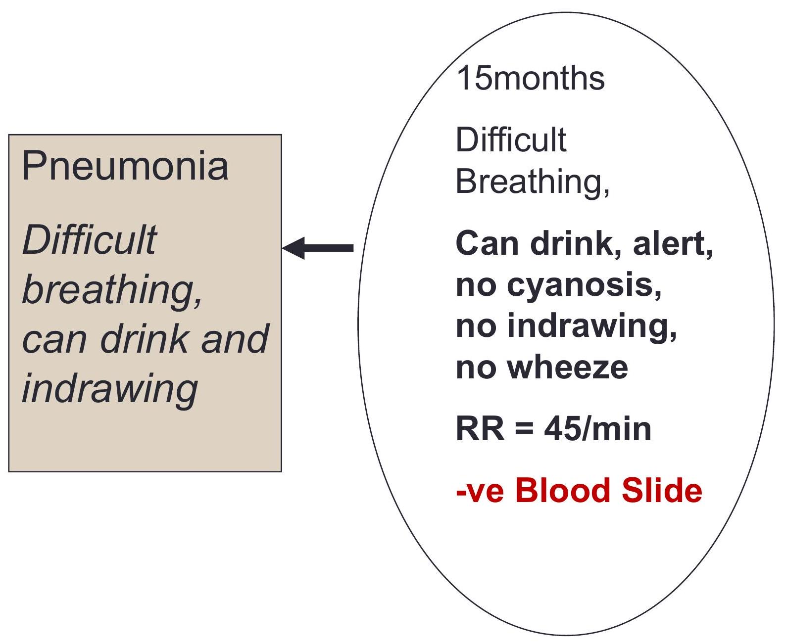
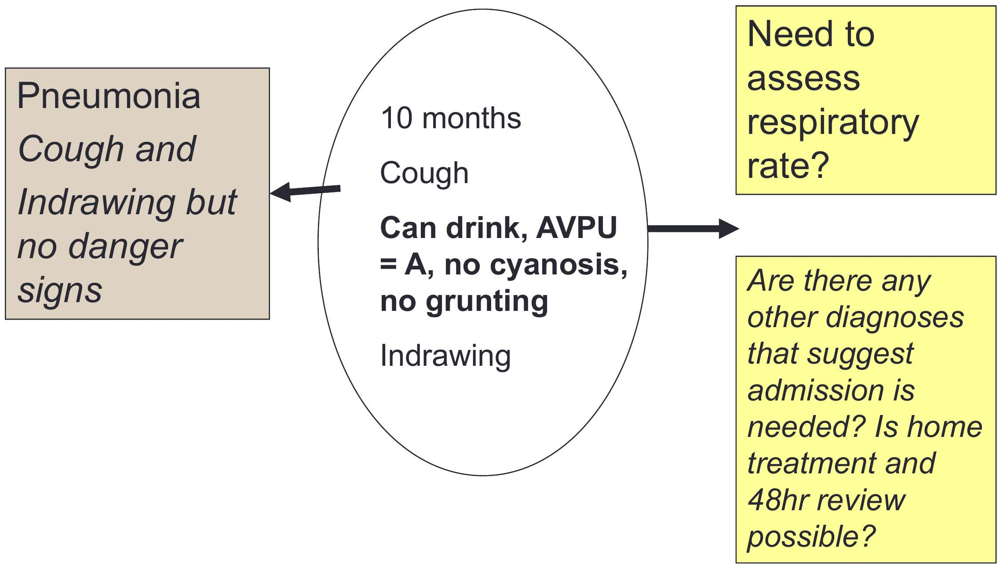

The Child With Respiratory Distress And An Acute Illness
Objectives
- State childhood illnesses that present with respiratory distress
- Describe management of a child with pneumonia
- Describe management of a child with asthma
Respiratory Distress - Causes
Lung / Airway Disease
- Acute Pneumonia
- Asthma
- PTB
- HIV-PCP
- Croup (LTB)
- Bronchiolitis
Systemic Disease
- Malaria
- Severe Anaemia
- Severe dehydration
- Heart Disease
- Renal Disease
Pneumonia
- Pneumonia can be classified per the causes (Viral, bacterial, fungal) or as per severity.
- Most acute respiratory infections including pneumonia are viral
In this session we will concentrate on the severity of the respiratory distress.
- A few signs in a child with cough and difficulty breathing can classify severity.
- We will introduce the new pneumonia guidelines - all protocol books before 2016 are out of date!
Target Patient for Pneumonia Guidelines
Cough or difficulty breathing in a patient aged 2-59 months.
The pneumonia guideline should be applied cautiously in the following patients:
| Assessment | Action /cause |
|---|---|
| Cough or fever more than 14 days | Consider TB |
| Exposure to TB or chronic cough | Consider TB |
| Severe acute malnutrition | Use guidelines for severe acute malnutrition |
| HIV infection | Use guidelines for HIV infected children |
| Readmission | Consider hospital acquired infection/TB/missed diagnosis |
Admission or Discharge for Pneumonia with Indrawing?
- A child with cough or difficulty breathing with lower chest wall indrawing BUT no danger signs can safely be managed as an outpatient
- If review at 48 hours can be conducted at a clinic
- If the family can bring the child sooner for any deterioration - careful counseling on danger signs that should prompt early return must be given
- Is there another illness that makes admission necessary?
- What is the HIV status?
- Is there severe acute malnutrition?
- What are the benefits of oral OPD therapy?
Assessing Severity of Respiratory Distress
Severe Pneumonia
A child is considered to have severe pneumonia if they present with any of the following signs:
- Cyanosed/oxygen sat <90%?
- Unable to drink?
- Reduced level of consciousness?
- Grunting?
Pneumonia (Not Severely Ill)
A child is classified with pneumonia if they have:
- Lower chest wall indrawing?
- OR Fast breathing?
- RR ≥ 50 aged 2 - 11 months
- RR ≥ 40 aged 12 - 59 months
Cough or Difficult Breathing Only
If a child has a history of cough/difficult breathing only with no other severe signs:
Cough syrups SHOULD NOT be prescribed.
Special Considerations: HIV Infected/Exposed
HIV infected or exposed with either:
- Severe pneumonia or
- Pneumonia with in-drawing
Management:
- Admit
- Treat with crystalline Penicillin & Gentamicin
- Oxygen if required
- < 12months of age give empiric treatment for PCP high dose cotrimoxazole
Empiric treatment for PCP is NOT recommended in children older than 12 months with severe pneumonia or pneumonia with lower chest wall in-drawing.
Asthma
- Most children with asthma will have a wheeze in addition to the cough or difficulties in breathing
- Severity of asthma is graded using just a few signs as for pneumonia
- Degree of severity can change after the initial dose of bronchodilators - reassess frequently.
- Consider other causes of wheeze for atypical presentation.
Wheeze - how severe is the asthma?
Life Threatening Asthma signs:
- Cyanosed or oxygen Saturation <90%?
- Unable to drink?
- Reduced level of consciousness?
- Grunting?
Providing Salbutamol
Nebulisers
- 2.5 mg for ages up to 5 yrs
- Check - if the nebuliser uses oxygen?
- Up to 3 doses in first 1 hour if needed
- Reassess after each dose
Inhaler, spacer + mask
- Mask should be used in all aged < 3 years
- 4-5yrs mouthpiece or mask
- Severe asthma - 6 puffs every 20 min for one hour if needed
- Mild/moderate asthma - 2 puffs every 20 minutes for one hour if needed
Case Examples: Causes of Respiratory Distress
Cause of Respiratory Distress 1?
Cause of Respiratory Distress 2?
Note this child has altered consciousness - meningitis is possible so LP, do BS for malaria
Cause of Respiratory Distress 3?
Cause of Respiratory Distress 4?
Cause of Respiratory Distress 5?
Cause of Respiratory Distress 6?
Summary
- Key clinical signs define the severity of respiratory distress
- Define severity of asthma/pneumonia and treat appropriately.
- Danger signs - inpatient care
- No danger signs - outpatient care
- Success of treatment of pneumonia with high dose oral amoxicillin is comparable to that of crystalline penicillin